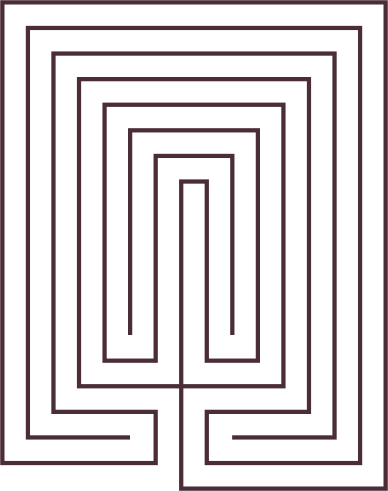

Mixed with Mazes
There is a popular terminological confusion between maze and labyrinth, although the former did not emerge until the late Renaissance.
Traditionally, labyrinths feature a unicursal path—a single route with multiple turns but no dead-ends or false openings—while mazes are based around multicursal paths and multiple blind alleys. Unhelpfully, the terms labyrinth and maze have been interchangeable for centuries. When Plato wrote about the mythological labyrinth of Knossos, the home of the Minotaur, he could have been referring to a labyrinth or a maze.
“It is a confusing path, hard to follow without a thread, but, provided [you are] not devoured at the midpoint, it leads surely, despite twists and turns, back to the beginning.”
